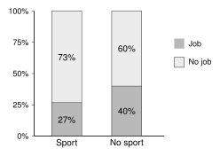
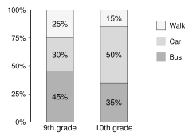

Do students who play a sport have jobs as often as students who do not?
To answer, compare percents inside each group.
| Job | No job | Total |
|---|
| Sport | 8 | 22 | 30 |
|---|
| No sport | 12 | 18 | 30 |
|---|
| Total | 20 | 40 | 60 |
|---|
| What it is | Example |
|---|
| Marginal distribution | Percents from the totals (the margins). Divide by the grand total. |
Job: No job: |
| Conditional distribution | Percents inside one group. Divide by that group's total. |
Students who play a sport:
Job: No job: |
Compare the conditional distributions.

Sport: have a job.
No sport: have a job.
The percents are different. Playing a sport and having a job are associated.
In this group, students who play a sport are less likely to have a job.
If the percents were about the same, there would be no association.
Gotcha: check the denominator.
“Of the students who
play a sport, what percent have a job?” Divide by the sport total (30), not by 60 and not by the job total (20).
3.2 Marginal and Conditional Distributions - PracticeName
Work with a partner. Compare answers when you finish each problem.
1. Use the table of how 80 students get to school.
| Bus | Car | Walk | Total |
|---|
| 9th grade | 18 | 12 | 10 | 40 |
|---|
| 10th grade | 14 | 20 | 6 | 40 |
|---|
| Total | 32 | 32 | 16 | 80 |
|---|
Find the marginal distribution of how students get to school.
2. Use the same table.
- Find the conditional distribution of how 9th graders get to school.
- Find the conditional distribution of how 10th graders get to school.
- Is grade associated with how students get to school? Explain.
3. Use the same table.
- What percent of 10th graders come by car?
- What percent of car riders are 10th graders?
- Why are the answers to (a) and (b) different?
4. Is each statement about the school table a marginal or a conditional percent?
- 40% of all students ride the bus.
- Of the students who walk, 62.5% are 9th graders.
- Half of the students are 10th graders.
- 25% of 9th graders walk.
5. 100 students said if they wear glasses and if they play an instrument.
| Glasses | No glasses | Total |
|---|
| Instrument | 12 | 28 | 40 |
|---|
| No instrument | 18 | 42 | 60 |
|---|
| Total | 30 | 70 | 100 |
|---|
- What percent of students who play an instrument wear glasses?
- What percent of students who do not play an instrument wear glasses?
- Is playing an instrument associated with wearing glasses? Explain.
6. This segmented bar chart shows the conditional distributions from problem 2.

- Which grade has the larger percent of students who walk?
- How does the chart show that grade and transportation are associated?